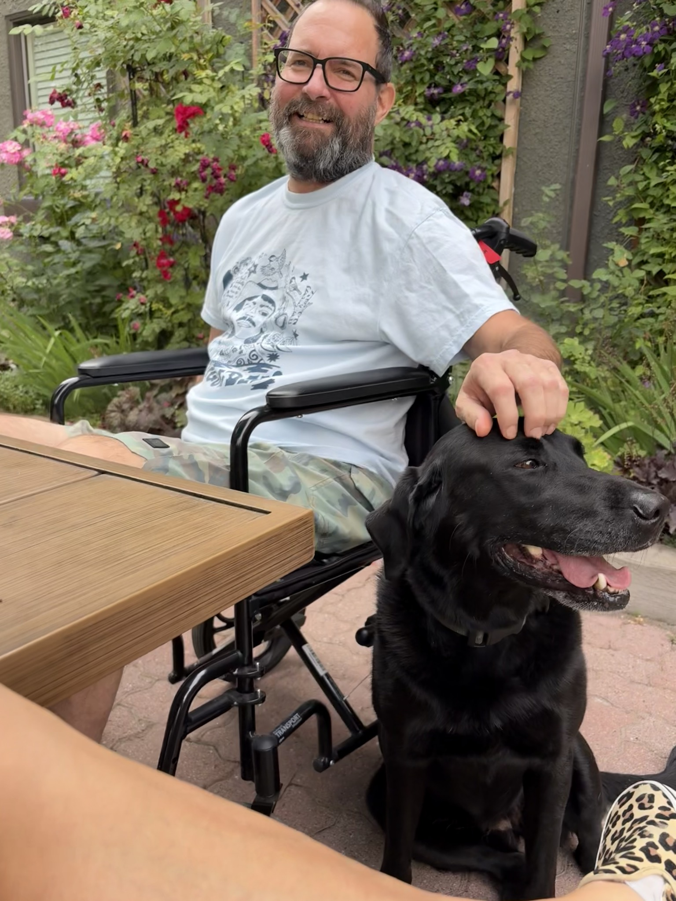

2016
Garth
“I’d like to spend more time learning about what’s really happening in all corners of the UBCO and UBC campuses and maybe even volunteer on a committee or two. I need to become more engaged with the institution as a whole.”
October 24, 1973 · August 3, 2026
Curious about everything.
Interested in everyone.
Garth was drawn to whatever was just beyond the edge of what he already knew. He'd follow an interesting thread, and quite often find someone else at the other end of it.
At UBC Okanagan, that instinct took him a long way from the AV work he started with. He became involved in research, visualization, emerging media and projects across the university. The technology mattered to him, but mostly because of what people could do with it.
He noticed something interesting.
Then he went off to find out more.
“I’d like to spend more time learning about what’s really happening in all corners of the UBCO and UBC campuses and maybe even volunteer on a committee or two. I need to become more engaged with the institution as a whole.”
“I’m a great listener; although not a technical proficiency, I find that this skill is serving me in increasing capacities in relationship building.”
ToddGarth’s future role could become one that “consults, engages, analyses and connects.”
“It’s going to be something of a second enlightenment and it’s rapidly advancing now (and I mean rapidly).”
Todd“Narrowing scope is not one of Garth’s strengths.”
“The opportunities to connect people otherwise unconnected is starting to present itself more and more, the community building is truly starting to self-manifest which is rewarding.”
